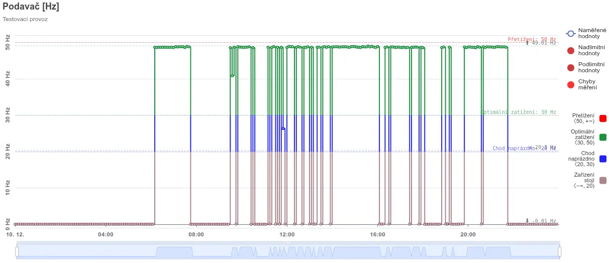

Návrhy
Posoudíme současný stav a navrhneme napájení, instalaci a automatizaci včetně cenové kalkulace. Pro modernizaci, rozšíření i novou technologii.
Přerov · od roku 2013
Od trafostanice přes kabelové rozvody až po řídicí a vizualizační pracoviště obsluhy. Navrhneme, nainstalujeme, zautomatizujeme a postaráme se o servis.

Navazujeme na dlouhou přerovskou tradici dodávek a instalací technologických linek pro kamenoprůmysl. Každou zakázku stavíme na požadavcích provozu, ne na katalogu.
Posoudíme současný stav a navrhneme napájení, instalaci a automatizaci včetně cenové kalkulace. Pro modernizaci, rozšíření i novou technologii.
Moderní přístroje a chytrá řešení s ohledem na spotřebu energie a lidské zdroje. Projektujeme na maximální efektivitu zařízení.
Kompletní dodávky od trafostanic přes kabelové rozvody po řídicí a vizualizační pracoviště. Vedoucí montáží hlídají kvalitu i bezpečnost na stavbě.
Automatizace jako cesta k úspoře energie, surovin a času. Řídicí systémy a vizualizace, které obsluha pochopí na první pohled.
Záruční i pozáruční servis, také mobilních technologií. Smluvním zákazníkům do 24 hodin, u nových linek vzdáleně přes řídicí systém.
Revize nejen kvůli předpisům. Pravidelná kontrola drží zařízení dlouhodobě provozuschopné a bezpečné.
Vlastní software
Informační systém pro sběr, vizualizaci a analýzu dat z drtičů, vah, pásových vah a podavačů. Bez ohledu na výrobce stroje nebo komunikační protokol.



Pracujeme pro provozy v Česku i na Slovensku. [Loga zákazníků, se kterými se dohodneme na zveřejnění.]
Je to prostředek, jak efektivně využít energie, suroviny a technologii. Naším cílem je co nejvyšší kvalita díky moderním technologiím a prvkům automatizace, ale hlavně spokojený zákazník. Firmu vede jednatel Marek Drgáč, provozovnu máme v Přerově na Tovačovské ulici.
Provozovna
Tovačovská 3457/4a, 750 02 Přerov
tel. +420 581 737 934
info@mriservis.cz
Marek Drgáč, jednatel
+420 603 146 529 · drgac@mriservis.cz